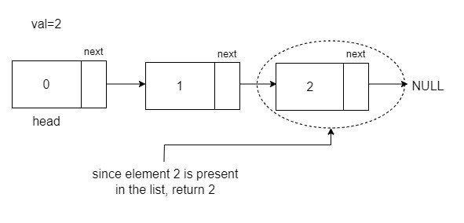
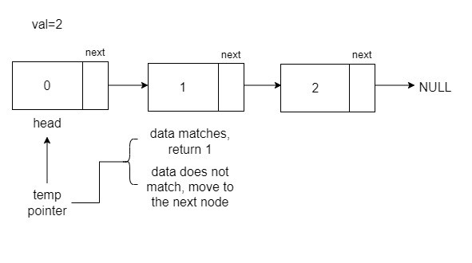
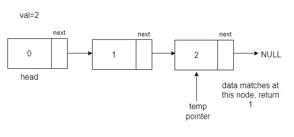

Problem Statement: Given the head of a linked list and an integer value, find out whether the integer is present in the linked list or not. Return true if it is present, or else return false.
Examples
Example 1:
Input Format: 0->1->2, val = 2
Result True
Explanation: Since element 2 is present in the list, it will return true.

Example 2:
Input Format: 12->5->8->7, val = 6
Result False
Explanation: The list does not contain element 6. Therefore, it returns false.
Solution:
Disclaimer: Don't jump directly to the solution, try it out yourself first.
Approach:
To check if an element is present in the linked list, traverse the list and at every node, check whether the data matches the specified value val. If a match is found, return true; otherwise, after traversing the entire list, return false.
Algorithm:
To check if an element is present in the linked list, start with a temp pointer pointing to the head. This pointer will be used to traverse the list, ensuring that the reference to the starting point is not lost. During the traversal, check if the data on the current node matches the specified value val. If no match is found, move to the next node using the next pointer of the current node.

At any moment, the data of the node matches with the val, stop, and return 1.

If, during traversal, the temp reaches the end, it means that it has reached the last point, which is NULL, hence, returns false at the end.
Code:
// Node class represents a node in a linked list
class Node {
public:
int data; // Data stored in the node
Node* next; // Pointer to the next node in the list
// Constructor with both data and next node as parameters
Node(int data1, Node* next1) {
data = data1;
next = next1;
}
// Constructor with only data as a parameter, sets next to nullptr
Node(int data1) {
data = data1;
next = nullptr;
}
};
// Function to check if a given element is present in the linked list
int checkifPresent(Node* head, int desiredElement) {
Node* temp = head;
// Traverse the linked list
while (temp != nullptr) {
// Check if the current node's data is equal to the desired element
if (temp->data == desiredElement)
return 1; // Return 1 if the element is found
// Move to the next node
temp = temp->next;
}
return 0; // Return 0 if the element is not found in the linked list
}
// Main function
int main() {
// Create a linked list: 1 -> 2 -> 3
Node* head = new Node(1);
head->next = new Node(2);
head->next->next = new Node(3);
int val = 5; // Element to be checked for presence in the linked list
// Call the checkifPresent function and print the result
cout << checkifPresent(head, val) << '\n';
return 0; // Return 0 to indicate successful execution
}
Output: True
Time Complexity:O(N) in the worst case if the element is not found. O(1) in the best case if the element is the first element.
Space Complexity: O(1) as we did not use any extra space.
// Node class represents a node in a linked list
class Node {
int data; // Data stored in the node
Node next; // Reference to the next node in the list
// Constructor with both data and next node as parameters
Node(int data1, Node next1) {
this.data = data1;
this.next = next1;
}
// Constructor with only data as a parameter, sets next to null
Node(int data1) {
this.data = data1;
this.next = null;
}
}
// LinkedList class contains utility methods for linked list operations
public class LinkedList {
// Function to check if a given element is present in the linked list
public static int checkifPresent(Node head, int desiredElement) {
Node temp = head;
// Traverse the linked list
while (temp != null) {
// Check if the current node's data is equal to the desired element
if (temp.data == desiredElement)
return 1; // Return 1 if the element is found
// Move to the next node
temp = temp.next;
}
return 0; // Return 0 if the element is not found in the linked list
}
// Main function
public static void main(String[] args) {
// Create a linked list: 1 -> 2 -> 3
int[] arr = {1, 2, 3};
Node head = new Node(arr[0]);
head.next = new Node(arr[1]);
head.next.next = new Node(arr[2]);
int val = 3; // Element to be checked for presence in the linked list
// Call the checkifPresent function and print the result
System.out.print(checkifPresent(head, val));
}
}
Output: True
Time Complexity:O(N) in the worst case if the element is not found. O(1) in the best case if the element is the first element.
Space Complexity: O(1) as we did not use any extra space.
class Node:
def __init__(self, data1, next1=None):
self.data = data1
self.next = next1
# Function to check if a given element is present in the linked list
def check_if_present(head, desired_element):
temp = head
# Traverse the linked list
while temp is not None:
# Check if the current node's data is equal to the desired element
if temp.data == desired_element:
return 1 # Return 1 if the element is found
# Move to the next node
temp = temp.next
return 0 # Return 0 if the element is not found in the linked list
# Main function
if __name__ == "__main__":
# Create a linked list: 1 -> 2 -> 3
arr = [1, 2, 3]
head = Node(arr[0])
head.next = Node(arr[1])
head.next.next = Node(arr[2])
val = 3 # Element to be checked for presence in the linked list
# Call the check_if_present function and print the result
print(check_if_present(head, val))
Output: True
Time Complexity:O(N) in the worst case if the element is not found. O(1) in the best case if the element is the first element.
Space Complexity: O(1) as we did not use any extra space.
[tabby title="JavaScript Code"]
class Node {
constructor(data1, next1 = null) {
this.data = data1;
this.next = next1;
}
}
// Function to check if a given element is present in the linked list
function checkIfPresent(head, desiredElement) {
let temp = head;
// Traverse the linked list
while (temp !== null) {
// Check if the current node's data is equal to the desired element
if (temp.data === desiredElement) {
return 1; // Return 1 if the element is found
}
// Move to the next node
temp = temp.next;
}
return 0; // Return 0 if the element is not found in the linked list
}
// Main function
function main() {
// Create a linked list: 1 -> 2 -> 3
const arr = [1, 2, 3];
const head = new Node(arr[0]);
head.next = new Node(arr[1]);
head.next.next = new Node(arr[2]);
const val = 3; // Element to be checked for presence in the linked list
// Call the checkIfPresent function and print the result
console.log(checkIfPresent(head, val));
}
// Execute the main function
main();
Output: True
Time Complexity:O(N) in the worst case if the element is not found. O(1) in the best case if the element is the first element.
Space Complexity: O(1) as we did not use any extra space.
In case you are learning DSA, you should definitely check out our free A2Z DSA Course with videos and blogs.
Special thanks to Neerav Sethi for contributing to this article on takeUforward. If you also wish to share your knowledge with the takeUforward fam, please check out this article